1打开 Slack 首选项
点击左下角头像，再选「首选项」。
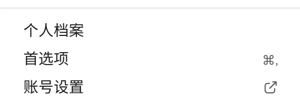
截图只保留菜单。截图里的个人账号信息已遮盖。界面可能因账号或版本略有不同。
先登录公司账号，再调整界面语言。
点击左下角头像，再选「首选项」。

截图只保留菜单。打开「语言和地区」，在「语言」中选择「简体中文」。
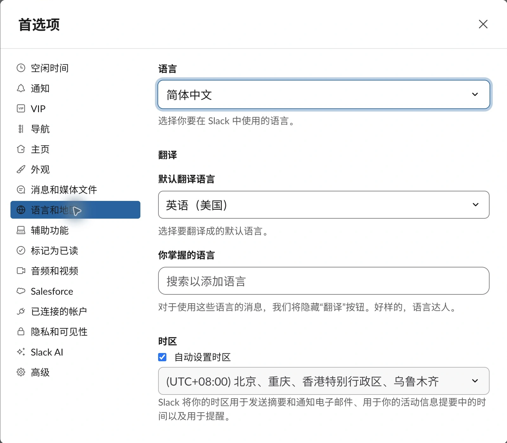
打开 Google 日历，右上角齿轮 → 设置 → 语言，选择简体中文。
Gmail 的界面语言需要在 Gmail 设置中单独检查。
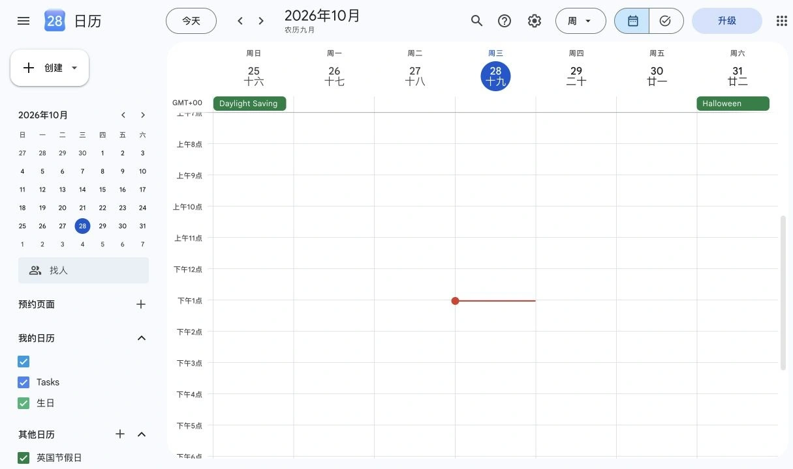
依次检查 Google Calendar、Google 云端硬盘和 Translate。遇到问题找 Ken Ge。
在 Slack 左侧点「代理与工具」→「应用」。搜索应用名称。
工作区已有应用时，直接打开；未添加时，按页面提示添加。
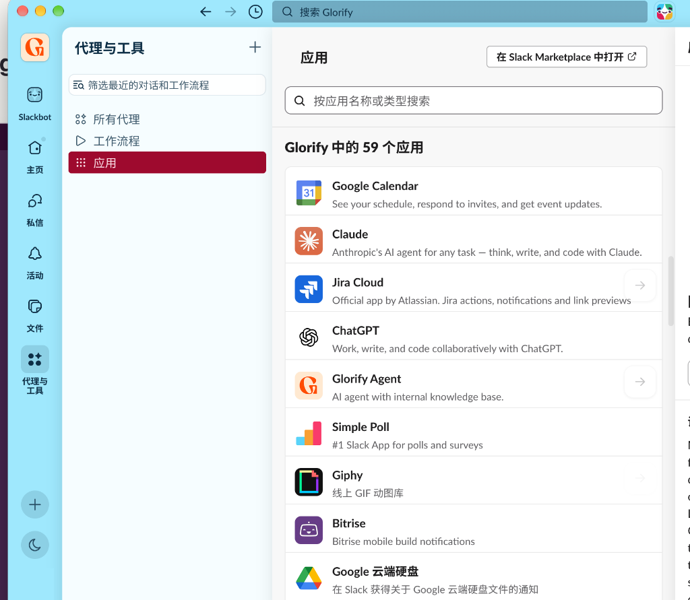
打开 Calendar 或 Google 云端硬盘应用，按提示连接 Google 账号。
选择 @glorify-app.com 公司邮箱。先阅读请求的权限，再自行决定是否继续。
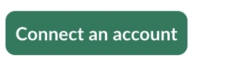
日历应用连接入口。后续账号选择和授权页面以实际显示为准。认准蓝色和橙色的 T 图标。下面是应用当前的真实设置界面。
在 Slack 应用列表找到 Translate，打开「主页」→ Settings。
你的语言可选 Chinese (Simplified)。
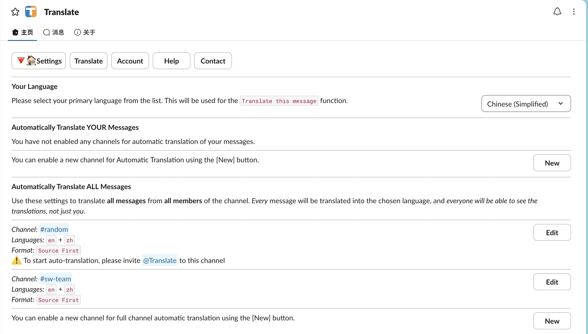
在 Automatically Translate ALL Messages 一栏点 New。
选择频道、English、Chinese (Simplified) 和展示格式。图中为未保存的演示。
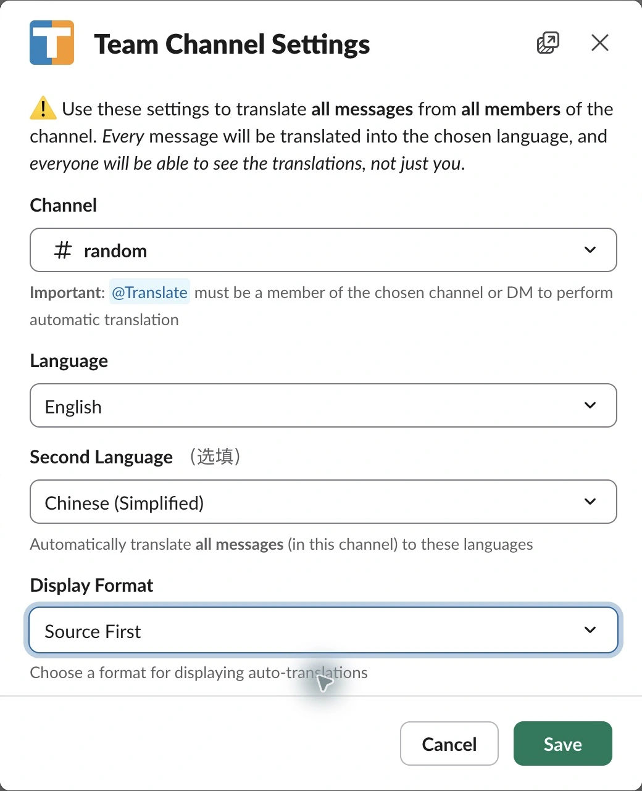
确认 @Translate 已加入该频道，再按需保存设置。
现场发一条中文，看是否出现英文译文；也可用 /translate 手动翻译。
这是第三方 Slack 应用。以下截图来自实际连接过程，不代表所有 /meet 应用的界面都相同。
在目标 Slack 频道输入 /meet 并发送。首次使用时，应用会提示连接账号；点击 Authenticate。
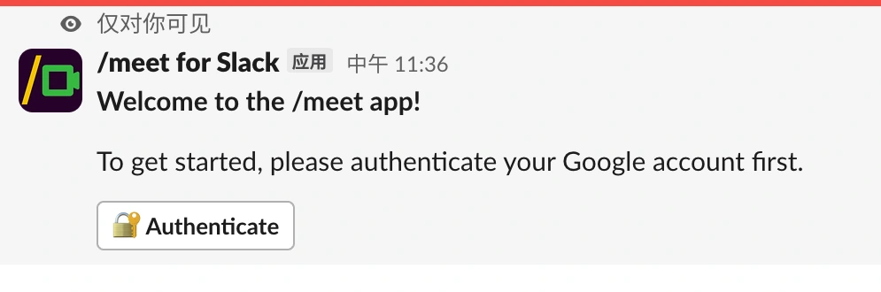
选择自己的 @glorify-app.com Google 账号。
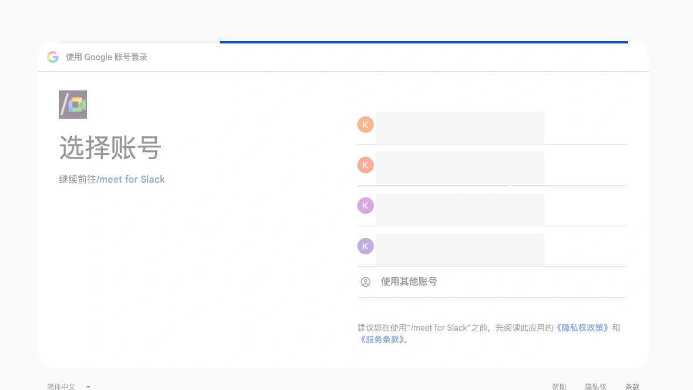
确认应用名称是 /meet for Slack。阅读身份信息和相关说明，再决定是否继续。
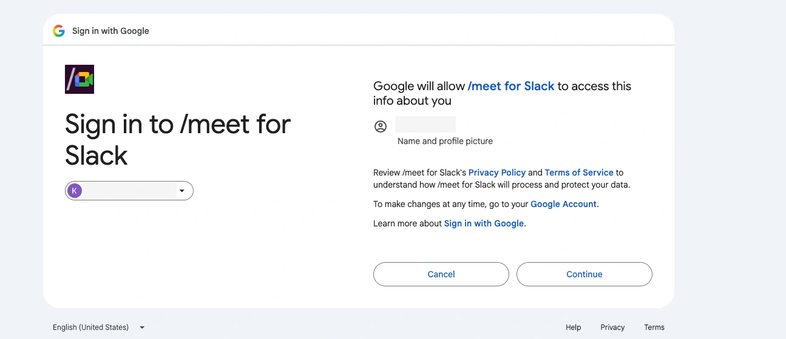
图中应用请求查看和修改所有日历上的活动。请本人查看权限，并按实际需要决定是否允许。
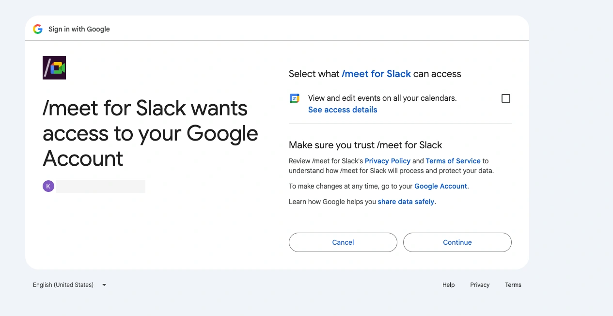
看到 Account connected 表示连接完成。回到频道，根据应用提示输入 /meet 建立会议，再打开会议链接。
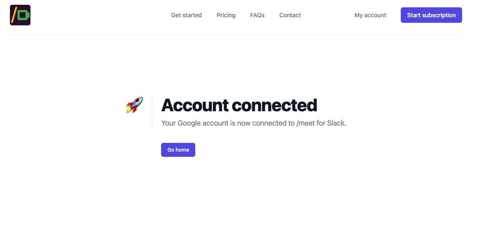
先在 Slack 打开 Google 云端硬盘应用，并连接自己的公司 Google 账号。
在应用的「消息」里查看文件分享、评论和访问申请。可在评论对应的消息列中回复。
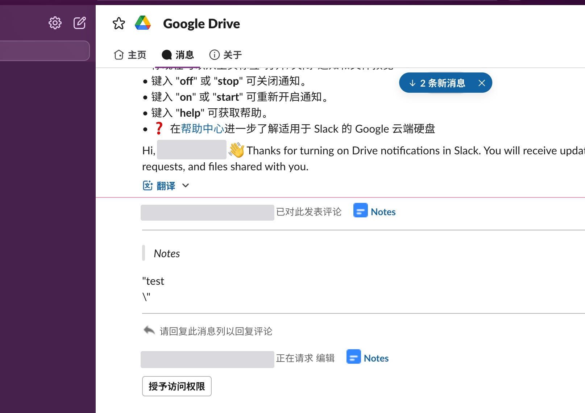
在应用消息里发送 on / start 开启通知；发送 off / stop 关闭通知。
处理权限申请前，确认申请对象和所需权限；查看者不能评论。
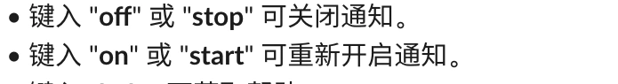